| Főoldal | Szellemek | Tárgyak | Bizonyítékok | Pályák | Taktikák |
Pályák
Ezen az oldalon minden Phasmophobia-pályát részletesen bemutatunk, hogy pontosan tudd, mire számíthatsz, mielőtt belépsz a szellemvadászat helyszínére! Minden pálya más méretű és eltérő elrendezésű, így akár egy szűk lakóház, akár egy hatalmas iskola vagy épp egy elhagyatott börtön vár rád, itt megtalálod a legfontosabb infókat róluk. Olvass tovább, hogy felkészülhess a helyszínek adottságaira, és kiismerd a legjobb rejtekhelyeket vagy éppen a leggyorsabb menekülési útvonalakat – mert néha tényleg minden másodperc számít!
(A képeken az elátkozott tárgyak szimbólumaira kattintva az adott tárgy bemutató fejezetére leszel továbbítva.) Kis Méretű PályákTanglewood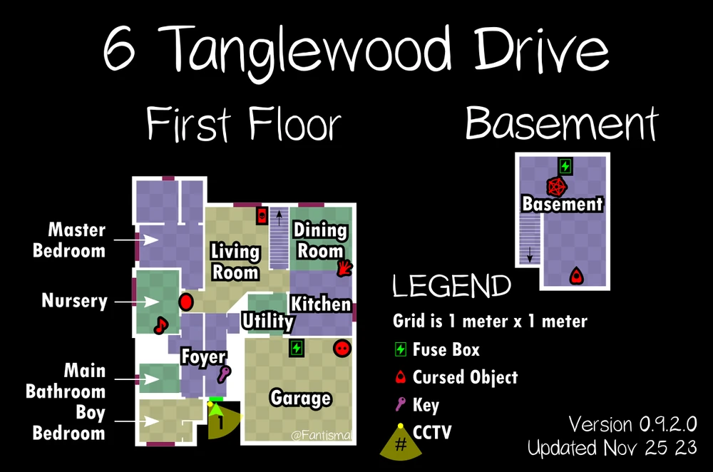 Az egyik legkisebb és legismertebb pálya, tökéletes kezdőknek! Ez egy kis, egy emeletes ház egy pincével, ahol gyakran egyszerűbb megtalálni a szellem helyszínét, mivel a szobák kicsik és közel vannak egymáshoz. A házban több elrejtőzési lehetőség van, mint például a hálószobai szekrények vagy a garázsban lévő polcok. Ha a szellem üldöz, próbálj gyorsan eljutni a garázsig vagy a fő hálószobáig! Ridgeview Court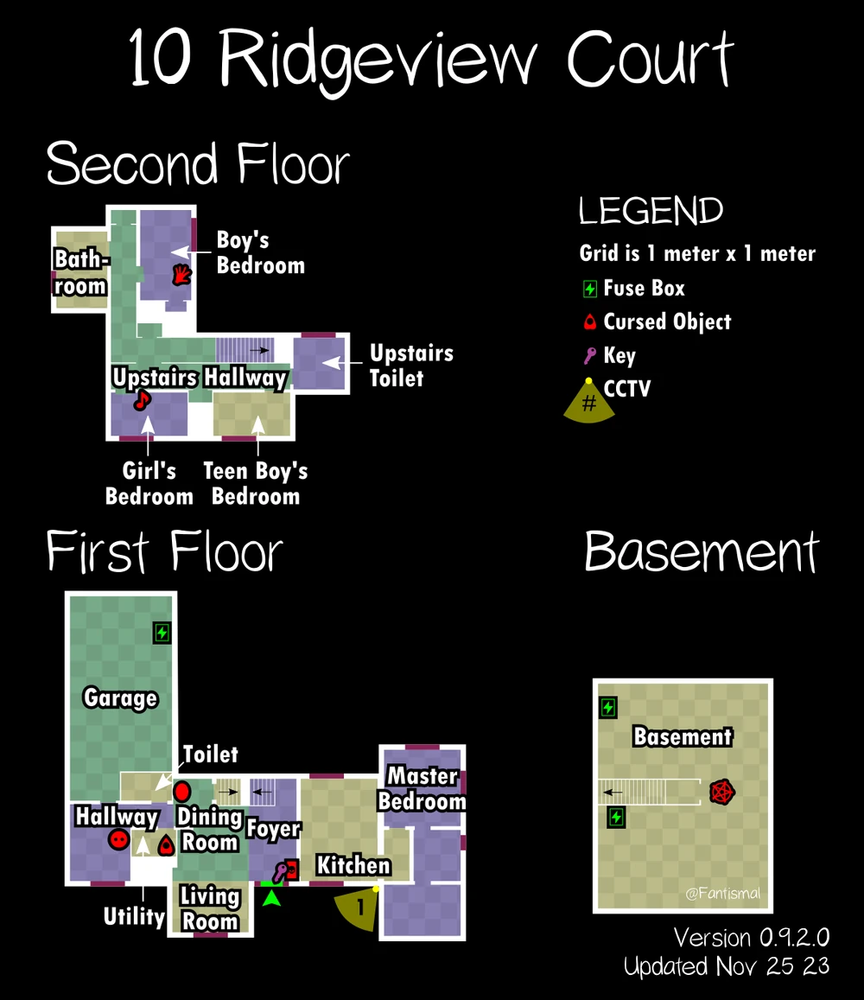 Ez egy nagyobb, kétemeletes ház, ami kihívást jelent a szellem helyének gyors megtalálásában. A több szoba miatt nehezebb azonnal rábukkanni a szellem jelenlétére, de ha van nálad hőmérő, gyorsabban kiszűrheted a szellem szobáját. Az elbújási lehetőségek főként a szekrényekben és a pincében találhatók, érdemes előre megjegyezni, melyik szekrények használhatók! Willow Street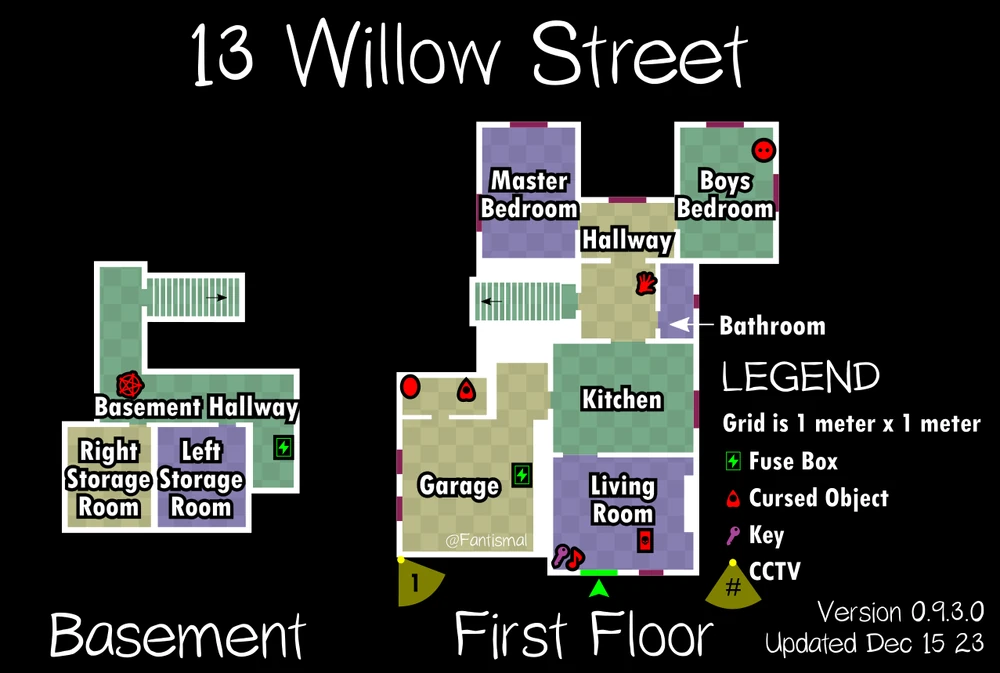 Willow Street kicsi és kompakt, de nincs benne szekrény vagy gardrób, így elrejtőzni nehezebb. Itt a búvóhelyek inkább az asztalok és egyéb bútorok mögött vannak, ezért légy gyors, ha üldözés indul. Az elrendezése miatt a szellem könnyen elérhet, de a szűk helyiségek segítenek gyorsan megkeresni a szellem szobáját. Edgefield Road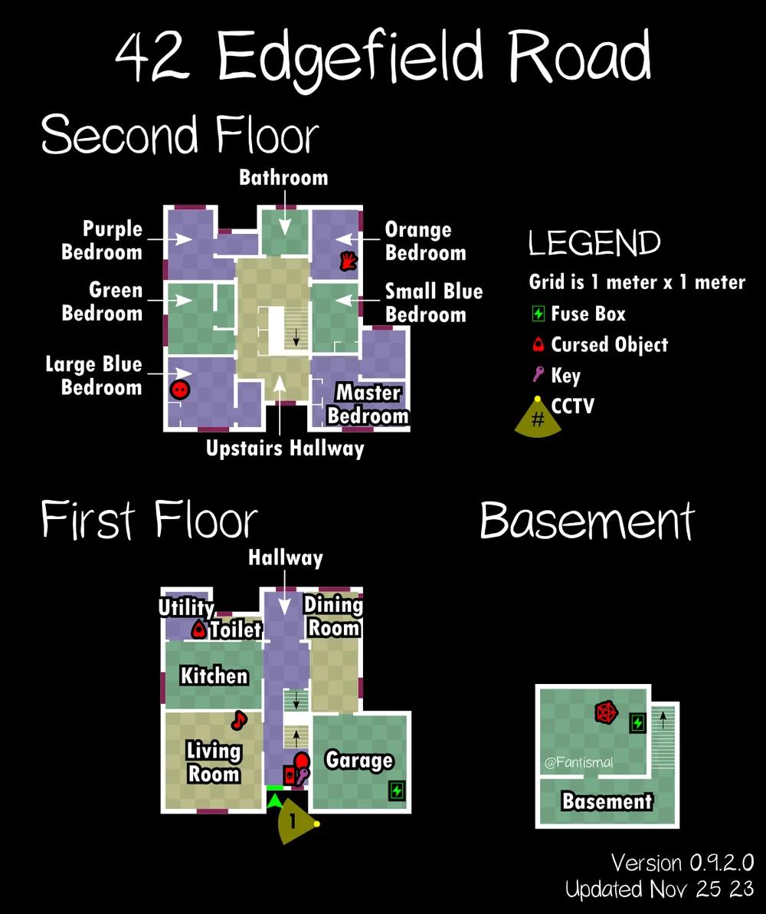 Ez a kétszintes családi ház sok szobával és egy pince résszel rendelkezik, ami kiváló búvóhelyekkel van tele. Ha üldözés indul, menj a felső emeleti szekrényekhez vagy a pincébe, ahol polcok mögött is elrejtőzhetsz. A tágasabb szobák és hosszú folyosók kihívást jelenthetnek, de a nagyobb bútorok mögé is elbújhatsz, ha gyors vagy. Bleasdale Farmhouse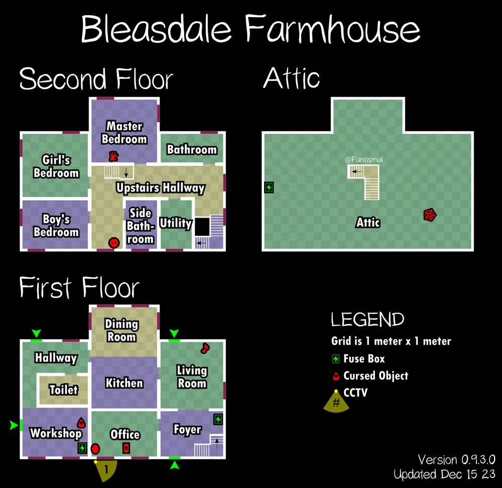 Ez a kétszintes farmház rendkívül nyomasztó, és a fa padló nyikorgása extra hangulatot ad a nyomozáshoz. Elbújási lehetőségek főként a hálószobák szekrényeiben és az alsó szinten lévő kisebb szekrényekben vannak, de a bútorok is adhatnak némi védelmet. Fontos, hogy kerüld a nagy nyitott tereket, mivel a szellem gyorsan elérhet. Camp Woodwind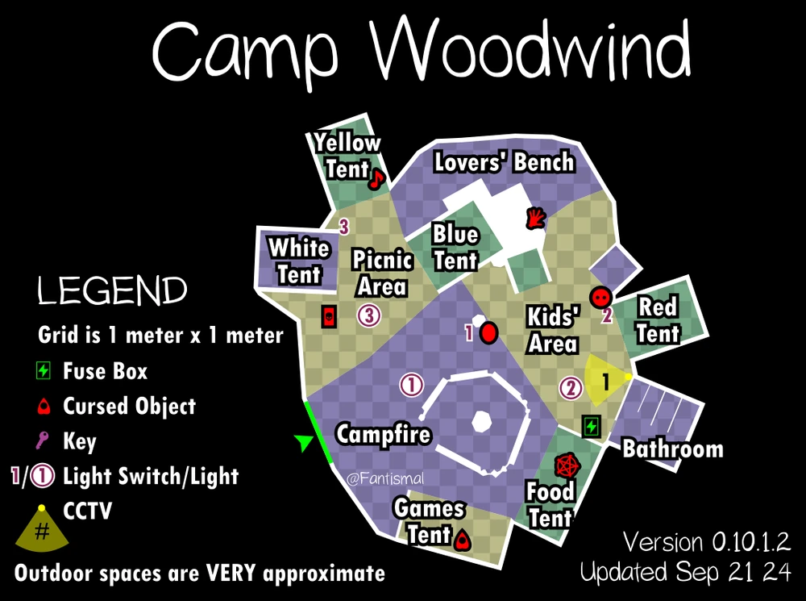 Ez egy kisebb kempinges pálya, ideális a gyors szellemvadászatokhoz. A sátorok mögé lehet elbújni, és bár nincs sok menedék, a sötétben nehezebb megtalálni téged. Érdemes mindig közel maradni a kijárathoz, mivel a nyílt területeken könnyen kiszúrhat a szellem, ha vadászat kezdődik. Grafton Farmhouse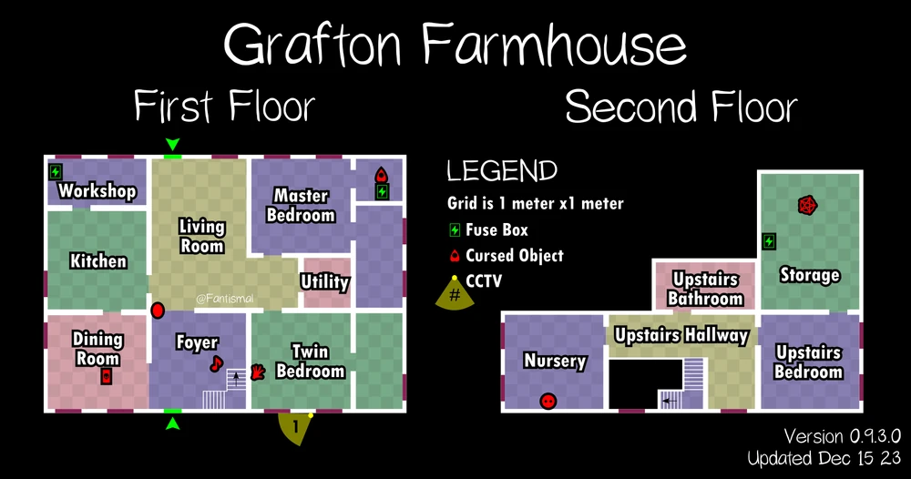 Ez a kétszintes, kicsit elhagyatott farmház komor hangulatot áraszt. A sötét folyosók és szűk szobák különösen ijesztőek, főleg egy-egy hosszabb vadászat során. Számos szekrény található a szobákban, és a konyhai asztalok mögött is megpróbálhatsz elbújni. A szellem itt gyakran aktív, ezért légy óvatos és tudd, merre a legközelebbi menedék. Point Hope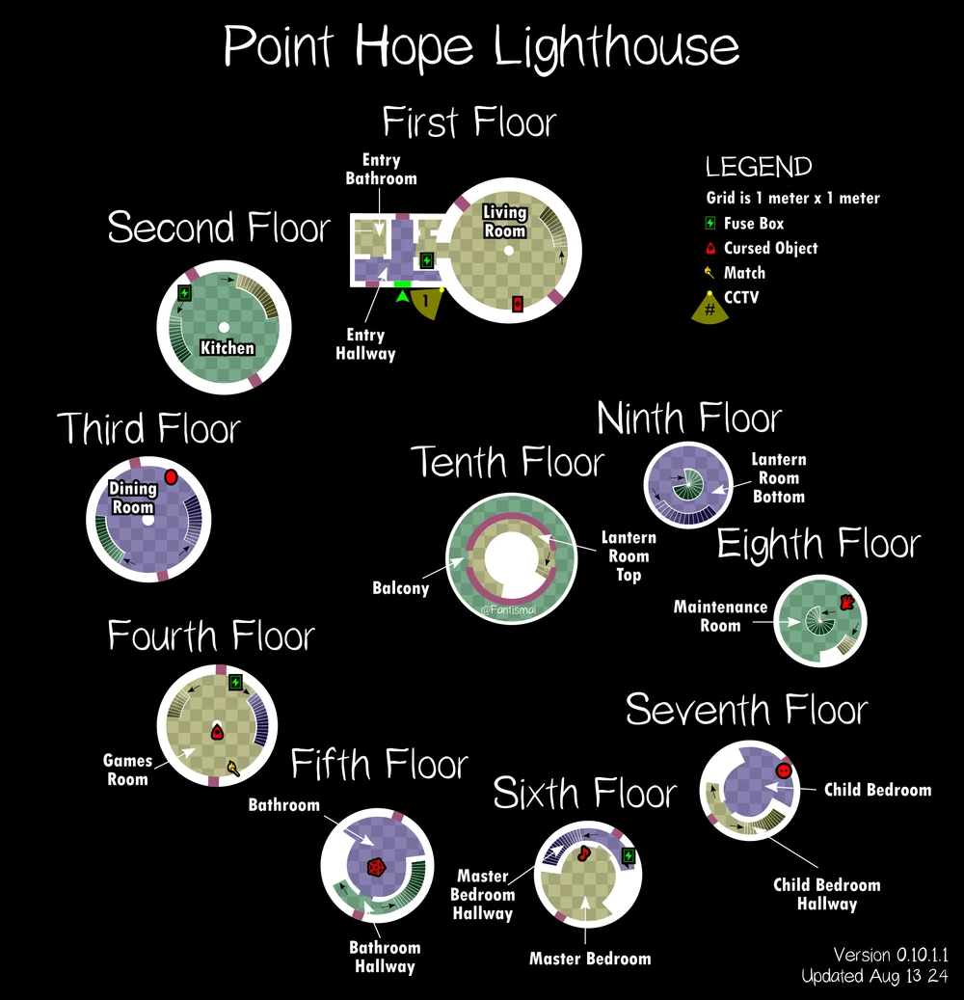 Point Hope egy különösen összetett térképpel rendelkező Torony, ahol több emelet és zegzugos folyosók várnak. A hely elrendezése miatt nehezebb eljutni egyik pontból a másikba, ami extra kihívást jelenthet üldözés esetén. Elbújási lehetőségek inkább a szűk sarkokban és nagyobb bútorok mögött találhatók, de érdemes mindig figyelni, merre van a legközelebbi kijárat. Közepes Méretű PályákMaple Lodge Campsite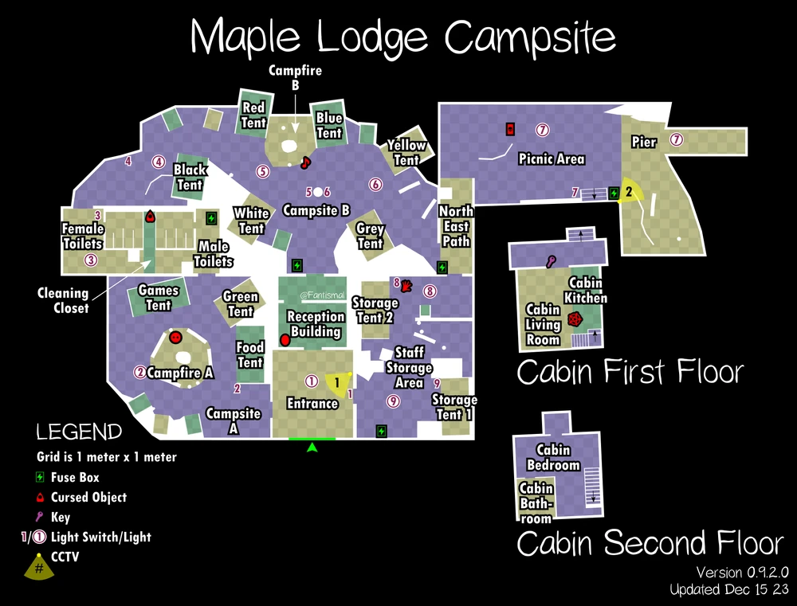 Ez egy hatalmas kemping terület, rengeteg sátorral és egy kisebb épülettel. A sátorok mögött, a fás területeken vagy a nyaralóépületben próbálkozhatsz az elrejtőzéssel. A nyílt területek miatt itt különösen óvatosnak kell lenni, mert a szellem könnyen rátalálhat, de ha gyors vagy, egy sátor vagy fa mögé gyorsan beugorhatsz. Prison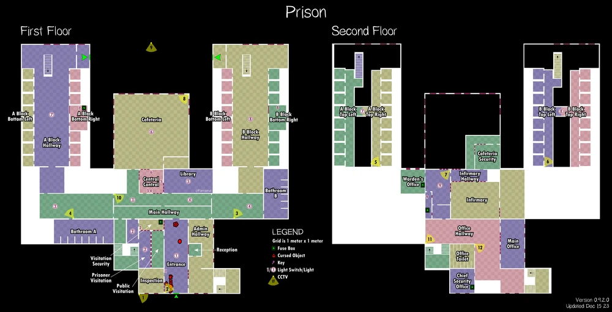 A börtön nagyméretű és sok zárt területtel rendelkezik, ahol nehezebb elbújni, de szerencsére rengeteg cella és kis szoba található. Itt a legnagyobb kihívás a szellem megtalálása, mivel sok helyen elrejtőzhet. Ha vadászat indul, próbálj meg egy cellába vagy kisebb szobába eljutni, és zárd be magad mögött az ajtót. Sunny Meadows (Restricted)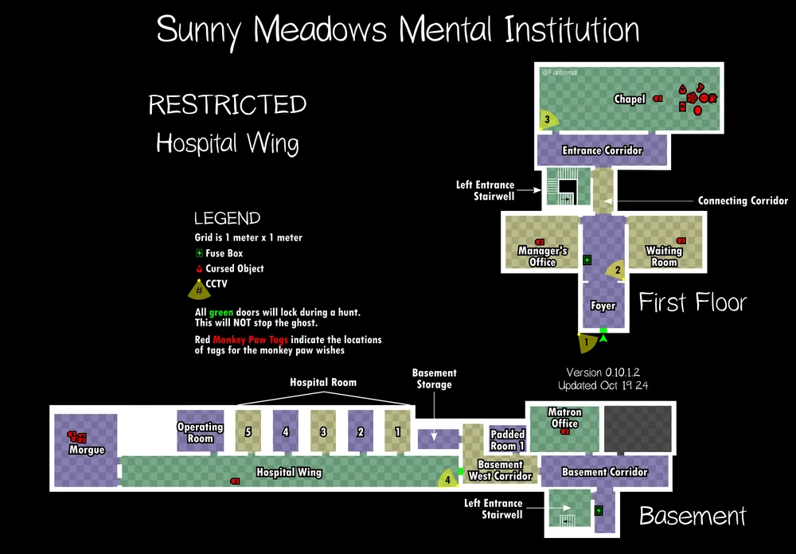 Ez a korlátozott méretű változata az elmegyógyintézetnek, ami kisebb, de nem kevésbé félelmetes. Öt különböző változata van, most ezek közül látható az egyik. Az elhagyatott szobák és hosszú folyosók gyorsan veszélyessé válhatnak. Elbújási lehetőségek korlátozottak, de az irodákban és kisebb helyiségekben menedéket találhatsz, ha a szellem vadászatba kezd. Próbálj minél kevesebb időt tölteni a fő folyosókon. Nagy méretű PályákBrownstone High School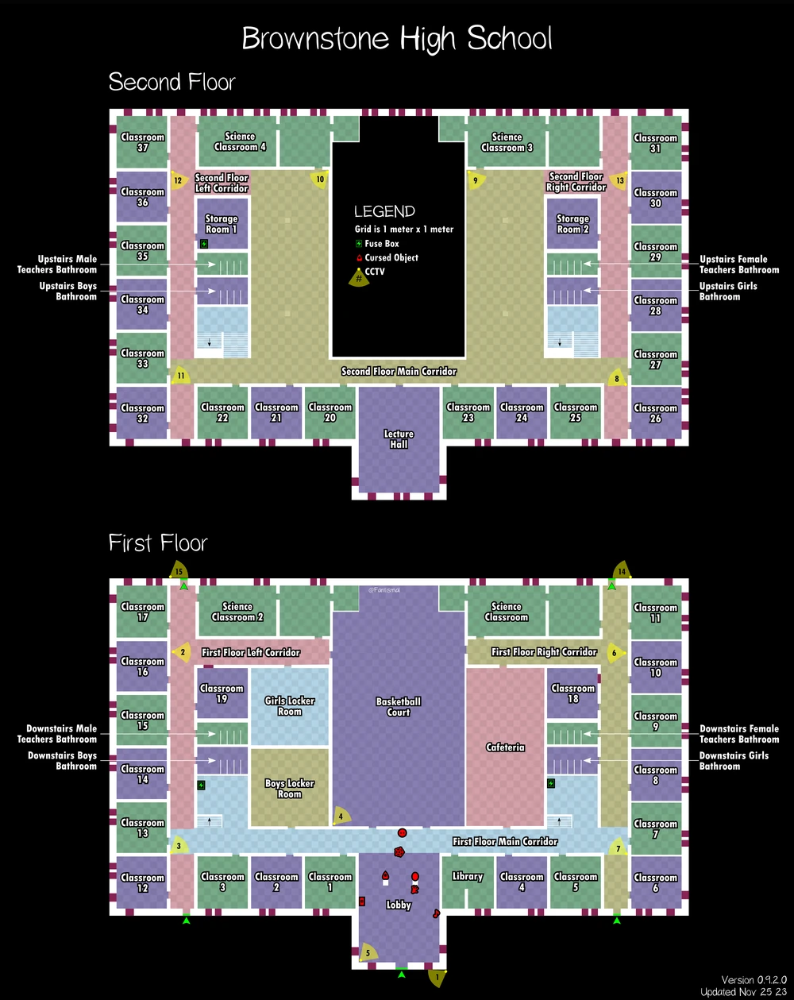 Ez egy nagy iskolaépület, melyben könnyű elveszni, tele van hosszú folyosókkal és szűk tantermekkel. A búvóhelyek főként az osztálytermek szekrényeiben vannak, de néhány nagyobb asztal mögött is próbálkozhatsz. Mivel hatalmas a terület, érdemes csapatosan mozogni, és mindig figyelni, merre a legközelebbi kijárat. Sunny Meadows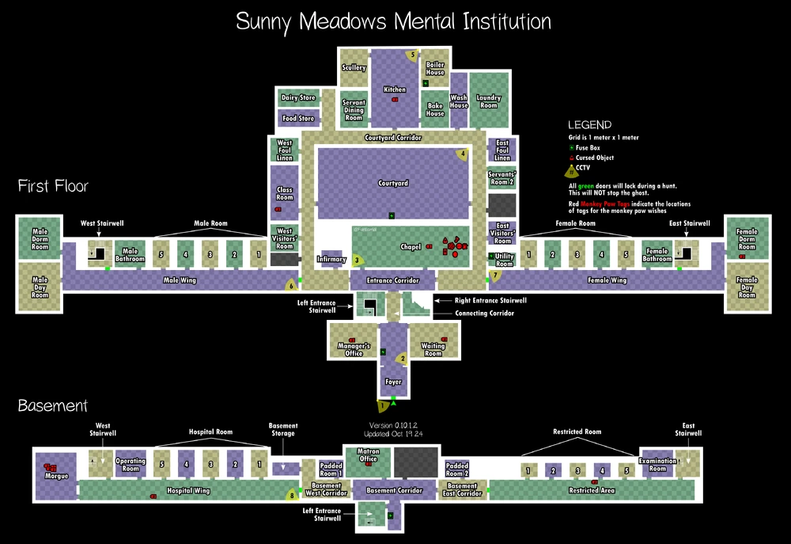 Ez a teljes intézet egy hatalmas helyszín, hosszú folyosókkal, kórtermekkel és ijesztő berendezésekkel. A pálya teljes mérete miatt különösen nehéz a szellem pontos helyének megtalálása. Az elbújási lehetőségek főként a zárt kórtermekben vagy az adminisztrációs irodákban találhatók, de a hely szűk folyosói miatt a vadászatok intenzívek és rémisztőek lehetnek. |